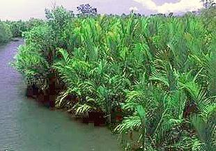
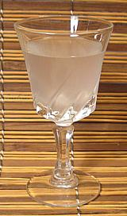

Nipa Palm

[Mangrove Palm;
Nipa (Philippines); Nipah (Indonesia, Malaysia); Dura Nuroc (Viet);
Gol Pata (Bangladesh); Dani (Burma); Attap Palm (Singapore);
Nypa fruticans]
This Southeast Asian feather palm grows in tidal mangrove swamps where it may constitute most of the vegetation. The trunk lies horizontal buried in mud and only fronds and flower stalks grow upward out of the mud and water. Sap from the inflorescence (flower clusters) can be tapped just as in other palms and is made into an alcoholic beverage called Tuba.
In the Philippines Tuba is given a secondary fermentation to turn it
into vinegar called Sukang Paombong.
Photo by Latorilla distributed under
GNU Free Documentation License v2.1 or later.
|
 Sukang Paombong (Nipa Palm Vinegar) can be found in Philippine markets in the US, which in turn, at least in Southern California, can be found near any large hospital complex. Our health care system here runs almost entirely on Filipino immigrants. In a taste test I preferred this vinegar to the Philippine coconut palm vinegar I had on hand. Of course quality varies - I use a premium brand, Lutong Pinoy "export quality". Ingredients are: Fermented Nipa Palm Sap, Water, Cloudifier. Apparently in the Philippines palm and coconut vinegar must be cloudy. This vinegar can be used in the same sort of applications rice vinegar
is used for - and particularly for Philippine recipes (Filipinos are very
big on vinegared dishes).
|